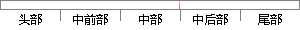

基本论域到模糊论域的
片段位置图

相似结果
相似片段：
模糊子集的论域分别设为： E=｛-m,-m+1,-m+2,…,0,1,…,m-1,m｝； EC=｛-n,-n+1,-n+2,…,0,1,n-1,n｝； U= {-q,-q+1,-q+2…,0,1,-1,…,q-1,q}； 其中m,n,q都为正整数，为了实现基本论域到模糊集论域的转换，必须引入量化因子和比例因子，量化因子一般用K表示，Ke 、Kec分别表示误差的量化因子和误差变化率的量化因子，其计算公式[2]为（2）。另外
| 对比库： | WriteCheck云资源库 |
| 来源： | www.shsm.org.cn 查看来源 |
| 发布时间： | 2014-12-24 |
| 相似率 | 100% （严重抄袭） |